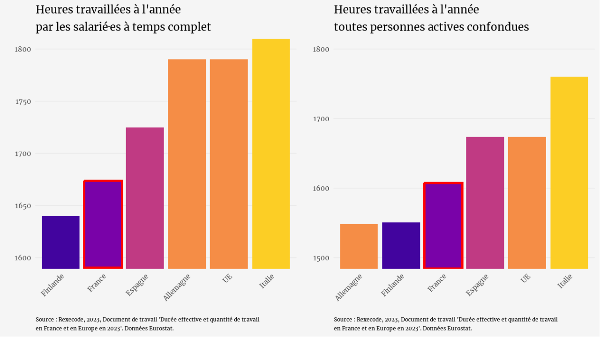
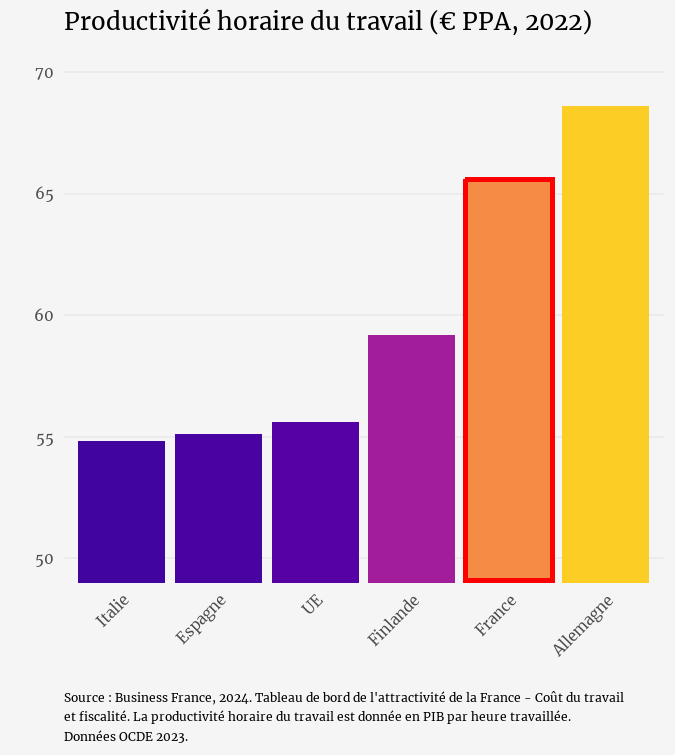

3 infos pour mieux comprendre le travail en France
Les Français·es travaillent moins que la moyenne europénne.
C'est en tout cas ce qu'affirmait la section 3 infos pour comprendre du JT de 20h sur France 2 le 16 avril dernier.
2 minutes qui nous racontent que :
- les Français·es travaillent moins que leurs voisins européens,
- sont moins nombreux·ses à travailler,
- et seraient moins productif·ves.
2 minutes qui nous donnent cette image des Français·es au travail :
Mais ces infos ne disent pas tout.
Quand on regarde de plus près :
Info #1 : Le temps de travail des Français·es est moins important que celui de nos voisin·es… si on regarde uniquement les emplois à temps pleins,
sans prendre en compte le temps partiel et les emplois non-salariés.

On compare souvent la France à l'Allemagne pour ériger cette dernière en modèle.
Les salarié·es Allemand·es qui travaillent à temps complet travaillent en moyenne 1790 heures par an, soit 117 heures de plus que les Français·es salarié·es à temps complet.
Mais sur l'ensemble des personnes actives, les Français·es travaillent en moyenne 1607 heures par an, contre 1548 heures pour les Allemand·es.
Info #2 : Le taux d'emploi est plus faible… mais la structure du marché du travail influence massivement cette donnée.
Le plus faible taux d'emploi de la France par rapport à ses voisins est souvent associé à la démographie (plus d'enfants + plus de retraité·es = moins de population active), et c'est effectivement le cas. Mais pas uniquement.
- En France, le taux d'emploi est de 68.4%. C'est moins qu'en Allemagne où il est de 77.2%.
- Parmis les personnes actives, la part de temps partiels est plus importante en Allemagne (28%) qu'en France (17%). Par ailleurs, les Français·es à temps partiel travaillent chaque semaine 23.7 heures en moyenne, quand cette durée est de 19.9 heures pour leurs homologues Allemand·es.
Info #3 : La productivité croît moins vite depuis la pandémie… mais la productivité horaire française est historiquement une des plus élevées d'Europe.
Une hausse du taux d'emploi tend à faire baisser la productivité horaire, car elle intègre des personnes moins qualifiées ou moins expérimentées. C'est ce qui s'est produit en France récemment : la forte progression du taux d'emploi post-covid a pesé sur la productivité horaire, mais a augmenté la richesse globale produite.
Si la productivité a décru (-8.5% depuis la pandémie), la productivité horaire de la France reste relativement élevée : 65.6 €/h (PPA), nettement au-dessus de la moyenne européenne (55.6 €/h).
En définitive, le vrai sujet n'est pas seulement de travailler "plus" ou "moins" : c'est de mieux prendre en compte qui travaille, combien et dans quelles conditions.
Parce qu'aujourd'hui, le débat public reste focalisé sur la quantité travaillée… sans jamais parler de la qualité.
☕ Et vous, vous en pensez quoi ? Devrait-on travailler plus ? Moins ? Mieux ?
A lire sur le même thème :
- Le 1er mai, on célèbre le travail... mais lequel exactement ?
- L'indice d'égalité professionnelle : progrès réel ou écran de fumée ?
Vous aimez les stats qui déconstruisent les idées reçues ?
Abonnez-vous ma liste de diffusion en cliquant sur le bouton ci-dessous ↓
Je m'appelle Marie Vialaret. Je suis présidente de l'association tpà et conférencière sur les questions d'égalité de genre. Statisticienne de formation, je suis consultante indépendante en analyse de données.
Diplômée de la Toulouse School of Economics, j'ai ensuite étudié les statistiques appliquées à l'ENSAE ParisTech.